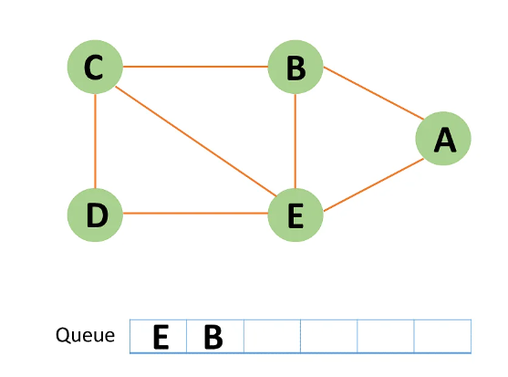

Question of ×
Click Here for explaination...
Introduction: Breadth-First Search Algorithm or BFS is the most widely utilized method.
BFS is a graph traversal approach in which you start at a source node and layer by layer through the graph,
analyzing the nodes directly related to the source node. Then, in BFS traversal, you must move on to the next-level neighbor nodes.
According to the BFS, you must traverse the graph in a breadthwise direction:
1) To begin, move horizontally and visit all the current layer's nodes.
2) Continue to the next layer.

Breadth-First Search uses a queue data structure to store the node and mark it as "visited" until it marks all the neighboring vertices directly related to it. The queue operates on the First In First Out (FIFO) principle, so the node's neighbors will be viewed in the order in which it inserts them in the node, starting with the node that was inserted first.
There are several reasons why you should use the BFS Algorithm to traverse graph data structure. The following are some of the essential features that make the BFS algorithm necessary:
1) The BFS algorithm has a simple and reliable architecture.
2) The BFS algorithm helps evaluate nodes in a graph and determines the shortest path to traverse nodes.
3) The BFS algorithm can traverse a graph in the fewest number of iterations possible.
4) The iterations in the BFS algorithm are smooth, and there is no way for this method to get stuck in an infinite loop.
5) In comparison to other algorithms, the BFS algorithm's result has a high level of accuracy.
Breadth-First Search uses a queue data structure technique to store the vertices. And the queue follows the First In First Out (FIFO) principle, which means that the neighbors of the node will be displayed, beginning with the node that was put first.
The transverse of the BFS algorithm is approaching the nodes in two ways.
1) Visited node
2) Not visited node
1) You can take any node as your source node or root node.
2) You should explore all the nodes.
3) And don't forget to explore on repeated nodes.
4) You must transverse the graph in a breadthwise direction, not depthwise.
The above tree diagram contains three layers, which are numbered from 0 to 2.
1) We are allowed to use any node as our source node as per the law. However, in this case, we can use 0 as our source node.
2) Then we explore breadthwise and find the nodes which are adjacently connected to our source node.
3) Then we must come down to layer two and find the relative nodes that are adjacent to the layer 1 nodes.
4) If you select the alternative source node, this order will change. And that's how the straightforward BFS algorithm operates.
The BFS algorithm starts at the first starting node in a graph and travels it entirely. After traversing the first node successfully, it visits and marks the next non-traversed vertex in the graph.
Step 1: In the graph, every vertex or node is known. First, initialize a queue.
Step 2: In the graph, start from source node A and mark it as visited.
Step 3: Then you can observe B and E, which are unvisited nearby nodes from A. You have two nodes in this example, but here choose B, mark it as visited, and enqueue it alphabetically.
Step 4: Node E is the next unvisited neighboring node from A. You enqueue it after marking it as visited.
Step 5: A now has no unvisited nodes in its immediate vicinity. As a result, you dequeue and locate A.
Step 6: Node C is an unvisited neighboring node from B. You enqueue it after marking it as visited.
Step 7: Node D is an unvisited neighboring node from C. You enqueue it after marking it as visited.
Step 8: If all of D's adjacent nodes have already been visited, remove D from the queue.
Step 9: Similarly, all nodes near E, B, and C nodes have already been visited; therefore, you must remove them from the queue.

Step 10: Because the queue is now empty, the bfs traversal has ended.
The time complexity of the breadth-first search algorithm can be stated as O(|V|+|E|) because, in the worst case, it will explore every vertex and edge. The number of vertices in the graph is |V|, while the edges are |E|.